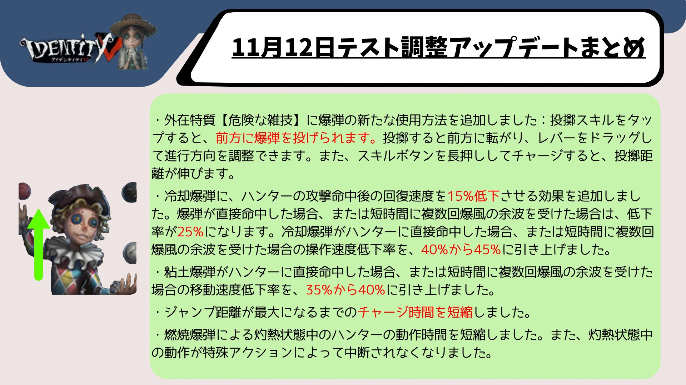

2026.11.12現在
チャリティーイベント「平凡な1日」開催！
『Identity V』集善障がい児支援プロジェクトのチャリティーイベント！ウェンディと一緒に子供たちの日常にある「小さな問題」を見つけて、装置で助けてあげよう。
イベントログインやミニゲームに参加すると、【SSR衣装】気象学者-無界の発明家、【イベント家具】のんびりお散歩、アイコン、アイコン枠、特殊アクション、居館レコードなどを無料で獲得できます！
ミニゲーム「雲上の工房」は毎日4ステージずつ解放され、全40ステージ。10/20ステージクリアで家具の別形態、30ステージクリアで【イベントタグ】雛羽の中の夢が解放されます。
イベント期間：2026年11月12日メンテナンス後〜12月2日23時59分
イベントの詳細はこちらへむへむの一言
気象学者の衣装の中で個人的に一番好きな衣装がでたかも！絶対にみんなも獲得してね！
「閃光」シリーズ【SSR衣装】写真家-瞬影がショップに登場！
限定特売価格688エコーで購入可能！
販売期間：2026年11月12日メンテナンス後〜2026年12月9日23時59分
へむへむの一言
やはり写真家をイケメン！これにつきる。

キャラ・天賦バランス調整が実施！曲芸師が大幅強化！
【サバイバー調整】曲芸師の爆弾に「投擲」が追加！前方に投げて転がせて、長押しで投擲距離アップ。冷却爆弾にハンターの攻撃後の回復速度低下（15%、直撃などで25%）が付くなど大きく強化されました。「神童」は泥団子のノックバック距離・当たり判定が下方修正されています。
【ハンター調整】「歯医者」はレンズの初期チャージが1.5→1回、1回の起動で攻撃4回までに下方修正。「心の獣」は獲物マークの持続時間が40秒→28秒に。「悪夢」・夜の番人・血の女王は強化されました。
【天賦調整】「転禍為福」が新天賦「リスク収益」に変更、「働きに見合った報酬」は最後の暗号機の解読時のみダメージを防ぐように。ハンターの「リッスン」は、10秒間のエリアを設置してエリア内のサバイバーの輪郭表示・減速と、自身の加速が得られる仕様になりました。
【その他】6段以上のランク戦では、完璧な調整で得られる解読進捗が1%→0.5%に引き下げられました。
キャラ・天賦バランス調整の詳細はこちらへむへむの一言
なんといっても曲芸師の強化は激熱です！使い方が幅広そうなので、これからの曲芸師が楽しみ
みんなのコメント